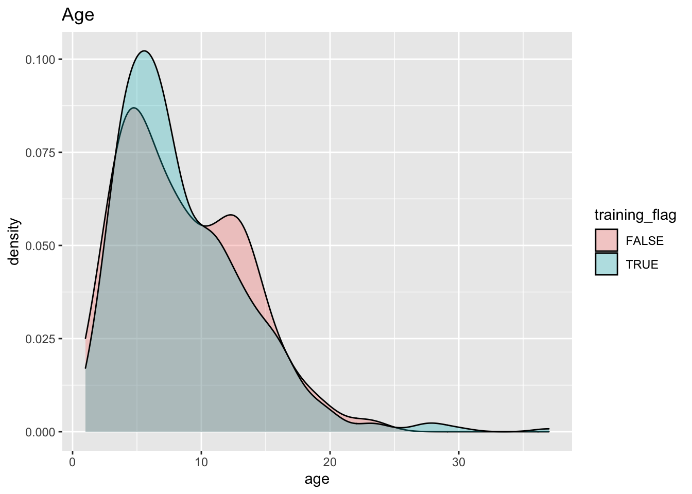

Section 14 Ranger in the Caret
14.2 Start section
Sys.time()## [1] "2021-04-21 13:58:47 BST"rm(list=ls())
graphics.off()
gc()## used (Mb) gc trigger (Mb) limit (Mb) max used (Mb)
## Ncells 2767568 147.9 4344478 232.1 NA 4344478 232.1
## Vcells 5013100 38.3 14815979 113.1 16384 14815979 113.1# Load libraries
library(caret)
library(doMC)## Loading required package: foreach## Loading required package: iterators## Loading required package: parallellibrary(corrplot)## corrplot 0.84 loadedlibrary(dplyr)
library(ranger)
# Reproducibility (it may be complicated in caret !)
#set.seed(42)14.3 Prepare data
14.3.1 Load raw data
data_file="/Users/alexey/OneDrive/Documents/Home/Alex/stat_in_r_Mar2021/example/structure_data.csv"
data.df <- read.csv(data_file)
dim(data.df)## [1] 3780 6# Clean-up
rm(data_file)14.3.2 Remove duplictes
data.df <- unique(data.df)
dim(data.df)## [1] 1600 614.3.3 Remove records with missed data
Could imputation be used for Random Forest?
# Count missed data per field
count.na.udf <- function(x)(sum(is.na(x)))
count_na <- apply(data.df,2,count.na.udf)
count_na## mileage manufactured.year engine.size owners price make
## 0 0 2 830 0 0count_na/nrow(data.df)## mileage manufactured.year engine.size owners price make
## 0.00000 0.00000 0.00125 0.51875 0.00000 0.00000# Remove missed data
data.df <- na.omit(data.df)
dim(data.df)## [1] 769 6str(data.df)## 'data.frame': 769 obs. of 6 variables:
## $ mileage : num 69000 95300 64000 47053 38655 ...
## $ manufactured.year: int 2012 2001 2013 2004 2003 2012 2013 2012 2009 2017 ...
## $ engine.size : num 2 3.2 1.8 3 5 2.1 1.8 2 1.8 1 ...
## $ owners : int 3 6 1 4 3 3 3 2 3 1 ...
## $ price : num 7000 8000 7000 7995 7999 ...
## $ make : Factor w/ 43 levels "Abarth","Alfa Romeo",..: 4 25 4 5 25 25 24 5 25 30 ...
## - attr(*, "na.action")= 'omit' Named int 1 4 12 18 19 21 25 26 27 28 ...
## ..- attr(*, "names")= chr "1" "4" "12" "19" ...# Clean-up
rm(count.na.udf, count_na)14.3.4 Exclude rare makes
ad-hoc processing - based on previous exploration
Excluding rare values is a difficult question:
- on one hand, we have little data about them, so it may not be prudent to include them to the model
- on the other hand, for numeric parameters (e.g. the oldest age, the highest price) the extreme values could be the rare ones and, sometime, an influential predictor / the most interesting response
make_counts <- sort(summary(data.df$make),decreasing = T)
make_counts## Vauxhall Nissan Volkswagen Ford BMW Mercedes-Benz Toyota Renault Fiat Peugeot MINI Audi Citroen Mazda SEAT Kia Honda Hyundai SKODA Volvo Suzuki Alfa Romeo Mitsubishi Lexus Dacia Jaguar MG Abarth Chrysler Porsche Smart Aston Martin Chevrolet DS AUTOMOBILES Saab Subaru Daihatsu Dodge Infiniti Isuzu Jeep SsangYong Land Rover
## 91 60 55 54 41 41 39 38 36 32 30 29 29 29 21 18 17 15 10 10 9 8 8 7 5 5 4 3 3 3 3 2 2 2 2 2 1 1 1 1 1 1 0barplot(make_counts,las=2)
abline(v=16.9, col="red", lty=2)rare_makes <- names(make_counts[make_counts<25])
rare_makes## [1] "SEAT" "Kia" "Honda" "Hyundai" "SKODA" "Volvo" "Suzuki" "Alfa Romeo" "Mitsubishi" "Lexus" "Dacia" "Jaguar" "MG" "Abarth" "Chrysler" "Porsche" "Smart" "Aston Martin" "Chevrolet" "DS AUTOMOBILES" "Saab" "Subaru" "Daihatsu" "Dodge" "Infiniti" "Isuzu" "Jeep" "SsangYong" "Land Rover"str(data.df)## 'data.frame': 769 obs. of 6 variables:
## $ mileage : num 69000 95300 64000 47053 38655 ...
## $ manufactured.year: int 2012 2001 2013 2004 2003 2012 2013 2012 2009 2017 ...
## $ engine.size : num 2 3.2 1.8 3 5 2.1 1.8 2 1.8 1 ...
## $ owners : int 3 6 1 4 3 3 3 2 3 1 ...
## $ price : num 7000 8000 7000 7995 7999 ...
## $ make : Factor w/ 43 levels "Abarth","Alfa Romeo",..: 4 25 4 5 25 25 24 5 25 30 ...
## - attr(*, "na.action")= 'omit' Named int 1 4 12 18 19 21 25 26 27 28 ...
## ..- attr(*, "names")= chr "1" "4" "12" "19" ...data.df <- data.df[!as.vector(data.df$make) %in% rare_makes,]
data.df$make <- droplevels(data.df$make)
str(data.df)## 'data.frame': 604 obs. of 6 variables:
## $ mileage : num 69000 95300 64000 47053 38655 ...
## $ manufactured.year: int 2012 2001 2013 2004 2003 2012 2013 2012 2009 2017 ...
## $ engine.size : num 2 3.2 1.8 3 5 2.1 1.8 2 1.8 1 ...
## $ owners : int 3 6 1 4 3 3 3 2 3 1 ...
## $ price : num 7000 8000 7000 7995 7999 ...
## $ make : Factor w/ 14 levels "Audi","BMW","Citroen",..: 1 7 1 2 7 7 6 2 7 10 ...
## - attr(*, "na.action")= 'omit' Named int 1 4 12 18 19 21 25 26 27 28 ...
## ..- attr(*, "names")= chr "1" "4" "12" "19" ...rm(rare_makes, make_counts)14.3.5 Transformation(s)
Use age instead of manufacture year
Other things, like PC-s or log-transformations, could also be calculated at this (?) stage
data.df <- data.df %>%
mutate(age=2021-manufactured.year) %>%
select(-manufactured.year)
str(data.df)## 'data.frame': 604 obs. of 6 variables:
## $ mileage : num 69000 95300 64000 47053 38655 ...
## $ engine.size: num 2 3.2 1.8 3 5 2.1 1.8 2 1.8 1 ...
## $ owners : int 3 6 1 4 3 3 3 2 3 1 ...
## $ price : num 7000 8000 7000 7995 7999 ...
## $ make : Factor w/ 14 levels "Audi","BMW","Citroen",..: 1 7 1 2 7 7 6 2 7 10 ...
## $ age : num 9 20 8 17 18 9 8 9 12 4 ...14.4 Split to training and test sets
Use caret function createDataPartition
trainIndex <- createDataPartition(data.df$price, times=1, p=0.7, list=F)
trainIndex[1:5]## [1] 2 9 10 11 13length(trainIndex)## [1] 424train.df <- data.df[trainIndex,]
test.df <- data.df[-trainIndex,]
training_flag <- as.factor(1:nrow(data.df) %in% trainIndex) # for plots
rm(trainIndex)14.5 Explore split data
14.5.1 Response distribution
quantile(train.df$price)## 0% 25% 50% 75% 100%
## 475 3000 5997 8995 34950quantile(test.df$price)## 0% 25% 50% 75% 100%
## 250.00 3051.75 5997.50 8995.00 34994.00ggplot(data.df) +
aes(price, fill=training_flag) +
geom_density(colour="black", alpha=0.3) +
ggtitle("Price")14.5.2 Predictors distribution
14.5.2.1 mileage
quantile(train.df$mileage)## 0% 25% 50% 75% 100%
## 931.00 31332.75 53540.50 81000.00 496867.00quantile(test.df$mileage)## 0% 25% 50% 75% 100%
## 565.00 29902.25 52000.00 78000.00 179844.00ggplot(data.df) +
aes(mileage, fill=training_flag) +
geom_density(colour="black", alpha=0.3) +
geom_vline(xintercept=3e5, linetype="dashed", color = "red") +
labs(title = "Mileage",
subtitle = "Should high mileage be removed from data ??")14.5.2.2 engine.size
quantile(train.df$engine.size)## 0% 25% 50% 75% 100%
## 0.9 1.2 1.5 1.9 5.5quantile(test.df$engine.size)## 0% 25% 50% 75% 100%
## 0.900 1.200 1.500 1.825 5.000ggplot(data.df) +
aes(engine.size, fill=training_flag) +
geom_density(colour="black", alpha=0.3) +
ggtitle("Engine size")14.5.2.3 Age
quantile(train.df$age)## 0% 25% 50% 75% 100%
## 1 5 7 11 37quantile(test.df$age)## 0% 25% 50% 75% 100%
## 1 5 8 12 23ggplot(data.df) +
aes(age, fill=training_flag) +
geom_density(colour="black", alpha=0.3) +
ggtitle("Age")
14.5.2.4 Owners
table(data.df$owners,training_flag)## training_flag
## FALSE TRUE
## 1 52 117
## 2 57 137
## 3 32 91
## 4 18 39
## 5 13 28
## 6 4 8
## 7 2 0
## 8 2 2
## 10 0 1
## 12 0 1ggplot(data.df) +
aes(owners, fill=training_flag) +
geom_density(colour="black", alpha=0.3) +
ggtitle("Owners")ggplot(data.df) +
aes(owners, fill=training_flag) +
geom_histogram(colour="black", alpha=0.2, binwidth = 1) +
labs(title = "Owners",
subtitle = "stacked histogram",
caption = "Processed data")ggplot(data.df) +
aes(owners, fill=training_flag) +
geom_histogram(colour="black", alpha=0.2, binwidth = 1, position="identity") +
labs(title = "Owners",
subtitle = "overlaid histogram",
caption = "Processed data")14.5.2.5 Make
x <- table(data.df$make,training_flag)
x## training_flag
## FALSE TRUE
## Audi 9 20
## BMW 11 30
## Citroen 9 20
## Fiat 9 27
## Ford 16 38
## Mazda 9 20
## Mercedes-Benz 13 28
## MINI 9 21
## Nissan 22 38
## Peugeot 8 24
## Renault 13 25
## Toyota 13 26
## Vauxhall 24 67
## Volkswagen 15 40y <- x[order(rowSums(x), decreasing=T),]
y## training_flag
## FALSE TRUE
## Vauxhall 24 67
## Nissan 22 38
## Volkswagen 15 40
## Ford 16 38
## BMW 11 30
## Mercedes-Benz 13 28
## Toyota 13 26
## Renault 13 25
## Fiat 9 27
## Peugeot 8 24
## MINI 9 21
## Audi 9 20
## Citroen 9 20
## Mazda 9 20barplot(t(y), main="Make (pre-porcessed & split data)", las=2)# Clean-up
rm(x,y,training_flag)14.5.3 Checks not used for this model
14.5.3.1 Predictors variability in training data
numeric_predictors <- c("mileage","engine.size","owners","age")
nearZeroVar(train.df[,numeric_predictors], saveMetrics = T)## freqRatio percentUnique zeroVar nzv
## mileage 1.000000 85.377358 FALSE FALSE
## engine.size 1.083333 5.424528 FALSE FALSE
## owners 1.170940 2.122642 FALSE FALSE
## age 1.000000 6.132075 FALSE FALSEx <- data.frame(train.df,bad_predictor=1)
str(x)## 'data.frame': 424 obs. of 7 variables:
## $ mileage : num 95300 74500 22255 38926 35035 ...
## $ engine.size : num 3.2 1.8 1 1.5 1.2 1 1.2 1.4 1.4 1.4 ...
## $ owners : int 6 3 1 2 2 5 4 3 2 2 ...
## $ price : num 8000 7600 8995 9990 6495 ...
## $ make : Factor w/ 14 levels "Audi","BMW","Citroen",..: 7 7 10 8 13 10 4 4 5 10 ...
## $ age : num 20 12 4 5 4 12 9 11 16 13 ...
## $ bad_predictor: num 1 1 1 1 1 1 1 1 1 1 ...numeric_predictors <- c("mileage","engine.size","owners","age","bad_predictor")
nearZeroVar(x[,numeric_predictors], saveMetrics = T)## freqRatio percentUnique zeroVar nzv
## mileage 1.000000 85.3773585 FALSE FALSE
## engine.size 1.083333 5.4245283 FALSE FALSE
## owners 1.170940 2.1226415 FALSE FALSE
## age 1.000000 6.1320755 FALSE FALSE
## bad_predictor 0.000000 0.2358491 TRUE TRUEnumeric_predictors <- c("mileage","engine.size","owners","age")
rm(x)14.5.3.2 Scales of numeric predictors
Centering and scaling may be important for some models, but not for Random Forest
Equivalent for categorical predictors ??
featurePlot(x = train.df[,numeric_predictors],
y = train.df$price,
plot = "scatter",
layout = c(2,3))# To do: Add regression lines14.5.3.3 Correlation of numeric predictors
Technical: use findCorrelation from caret
Conceptual:
- How is it important for Random Forest ?
- What about categorical predictors (chi sq for contingency table) ?
# Calculate correlations
corMat <- cor(train.df[,numeric_predictors])
corMat## mileage engine.size owners age
## mileage 1.0000000 0.2066522 0.5397023 0.6020196
## engine.size 0.2066522 1.0000000 0.2166323 0.2501745
## owners 0.5397023 0.2166323 1.0000000 0.6505029
## age 0.6020196 0.2501745 0.6505029 1.0000000# Plot (is it better than heatmap?)
corrplot(corMat, order="hclust", tl.cex=1)# Look at hightly correlated predictors
highCorr <- findCorrelation(corMat, cutoff=0.75)
length(highCorr)## [1] 0#names(train.df[,numeric_predictors])[highCorr]
# Clean-up
rm(corMat,highCorr,numeric_predictors)14.6 Set parallel processing
Obviously, the cross-validation is naturally parallelisable.
caret is an example of the new generation of R packages that may recognize and use multiple cores (using help from doMC package).
registerDoMC(detectCores())
getDoParWorkers()## [1] 414.7 Build model(s)
14.7.1 Configure resampling
the small number of CV partitions is on purpose: to avoid issues with lack of data in branches/leaves during cross-validation
# Faster, less robust (less prone to over-fitting ??)
train_ctrl_1 <- trainControl(method="cv",
number = 5)
# Slower, more robust (more prone to over-fitting ??)
train_ctrl_2 <- trainControl(method="repeatedcv",
number = 5,
repeats = 10)14.7.2 Default model
Use default grid of hyper-parameters set for ranger by caret
The importance of varianbles could be evaluated by Gini or Permutation:
# Train
x <- Sys.time()
rangerFit1 <- train(price ~ .,
data = train.df,
method = "ranger",
trControl = train_ctrl_2,
importance = "permutation",
verbose = FALSE)
Sys.time() - x## Time difference of 47.68218 secs# Check result
rangerFit1## Random Forest
##
## 424 samples
## 5 predictor
##
## No pre-processing
## Resampling: Cross-Validated (5 fold, repeated 10 times)
## Summary of sample sizes: 339, 339, 340, 339, 339, 338, ...
## Resampling results across tuning parameters:
##
## mtry splitrule RMSE Rsquared MAE
## 2 variance 2666.235 0.7624565 1778.258
## 2 extratrees 3121.548 0.6977838 2150.264
## 9 variance 2247.079 0.7892767 1464.055
## 9 extratrees 2209.335 0.8017228 1455.794
## 17 variance 2316.893 0.7711552 1499.514
## 17 extratrees 2172.865 0.8019147 1433.934
##
## Tuning parameter 'min.node.size' was held constant at a value of 5
## RMSE was used to select the optimal model using the smallest value.
## The final values used for the model were mtry = 17, splitrule = extratrees and min.node.size = 5.rangerFit1$finalModel## Ranger result
##
## Call:
## ranger::ranger(dependent.variable.name = ".outcome", data = x, mtry = min(param$mtry, ncol(x)), min.node.size = param$min.node.size, splitrule = as.character(param$splitrule), write.forest = TRUE, probability = classProbs, ...)
##
## Type: Regression
## Number of trees: 500
## Sample size: 424
## Number of independent variables: 17
## Mtry: 17
## Target node size: 5
## Variable importance mode: permutation
## Splitrule: extratrees
## Number of random splits: 1
## OOB prediction error (MSE): 4236339
## R squared (OOB): 0.8119659plot(varImp(rangerFit1),
main="Feature importance\nranger in caret with default hyper-parameters grid")# Clean-up
rm(x )14.7.3 Model with custom grid
Use expand.grid function from base
Making a custom grid of hyper-parameters requires some knowledge of them …
# Getting know the hyper-parameters
# https://topepo.github.io/caret/available-models.html -> ranger
# getModelInfo("ranger")
# mtry = 1:5 # number of predictors to pick at random ???
# min.node.size: 1:20 # Self-explanatory
# if (is.factor(y)): c("gini", "extratrees")
# else: c("variance", "extratrees", "maxstat")
# str(data.df)
# Make the custom grid of hyper-parameters
rangerGrid <- expand.grid(
mtry = seq(1,18,2),
splitrule = c("variance", "extratrees", "maxstat"),
min.node.size = seq(5,15,2))
nrow(rangerGrid)## [1] 162head(rangerGrid)## mtry splitrule min.node.size
## 1 1 variance 5
## 2 3 variance 5
## 3 5 variance 5
## 4 7 variance 5
## 5 9 variance 5
## 6 11 variance 5tail(rangerGrid)## mtry splitrule min.node.size
## 157 7 maxstat 15
## 158 9 maxstat 15
## 159 11 maxstat 15
## 160 13 maxstat 15
## 161 15 maxstat 15
## 162 17 maxstat 15# Train with the custom grid of hyper-parameters
x <- Sys.time()
rangerFit2 <- train(price ~ .,
data = train.df,
method = "ranger",
trControl = train_ctrl_2,
tuneGrid = rangerGrid,
importance = "permutation",
verbose = FALSE)
Sys.time() - x## Time difference of 19.29393 mins# Check results
rangerFit2## Random Forest
##
## 424 samples
## 5 predictor
##
## No pre-processing
## Resampling: Cross-Validated (5 fold, repeated 10 times)
## Summary of sample sizes: 338, 339, 340, 339, 340, 339, ...
## Resampling results across tuning parameters:
##
## mtry splitrule min.node.size RMSE Rsquared MAE
## 1 variance 5 3480.708 0.7090287 2472.049
## 1 variance 7 3485.074 0.7092895 2475.316
## 1 variance 9 3489.622 0.7078086 2478.340
## 1 variance 11 3488.937 0.7074563 2478.689
## 1 variance 13 3495.424 0.7069768 2482.410
## 1 variance 15 3497.762 0.7063670 2485.192
## 1 extratrees 5 3930.052 0.6124170 2879.577
## 1 extratrees 7 3939.023 0.6071972 2887.027
## 1 extratrees 9 3932.380 0.6104707 2882.411
## 1 extratrees 11 3942.351 0.6080585 2891.884
## 1 extratrees 13 3943.907 0.6059577 2890.984
## 1 extratrees 15 3948.833 0.6026171 2895.591
## 1 maxstat 5 4361.519 0.5766463 3253.215
## 1 maxstat 7 4358.142 0.5797896 3250.234
## 1 maxstat 9 4361.568 0.5780818 3253.265
## 1 maxstat 11 4368.732 0.5735337 3259.457
## 1 maxstat 13 4357.273 0.5765763 3248.064
## 1 maxstat 15 4359.366 0.5677793 3250.118
## 3 variance 5 2352.078 0.7933851 1563.604
## 3 variance 7 2370.127 0.7897887 1578.139
## 3 variance 9 2393.975 0.7861035 1593.235
## 3 variance 11 2414.148 0.7821976 1604.235
## 3 variance 13 2435.040 0.7790921 1618.012
## 3 variance 15 2455.284 0.7766778 1630.401
## 3 extratrees 5 2656.494 0.7538935 1813.204
## 3 extratrees 7 2680.668 0.7492453 1827.349
## 3 extratrees 9 2700.494 0.7460945 1838.420
## 3 extratrees 11 2730.644 0.7394906 1858.045
## 3 extratrees 13 2753.124 0.7360851 1873.314
## 3 extratrees 15 2777.481 0.7312582 1889.330
## 3 maxstat 5 3460.214 0.6723615 2442.387
## 3 maxstat 7 3466.623 0.6702104 2447.492
## 3 maxstat 9 3466.208 0.6688062 2444.038
## 3 maxstat 11 3475.988 0.6666921 2453.815
## 3 maxstat 13 3477.919 0.6655827 2451.536
## 3 maxstat 15 3488.781 0.6597247 2459.926
## 5 variance 5 2218.117 0.8026400 1468.044
## 5 variance 7 2240.590 0.7986390 1481.434
## 5 variance 9 2267.743 0.7939873 1498.788
## 5 variance 11 2291.741 0.7906138 1517.405
## 5 variance 13 2316.331 0.7859540 1532.410
## 5 variance 15 2339.008 0.7827188 1549.234
## 5 extratrees 5 2312.319 0.7963695 1550.998
## 5 extratrees 7 2348.701 0.7911407 1571.691
## 5 extratrees 9 2396.896 0.7826806 1600.222
## 5 extratrees 11 2432.837 0.7768959 1621.867
## 5 extratrees 13 2461.349 0.7727988 1641.644
## 5 extratrees 15 2497.813 0.7669131 1664.536
## 5 maxstat 5 2800.925 0.7285356 1894.520
## 5 maxstat 7 2802.588 0.7260980 1892.335
## 5 maxstat 9 2817.653 0.7219827 1896.834
## 5 maxstat 11 2822.011 0.7219941 1902.842
## 5 maxstat 13 2832.474 0.7176074 1906.936
## 5 maxstat 15 2840.442 0.7165951 1910.929
## 7 variance 5 2195.422 0.8013149 1447.152
## 7 variance 7 2220.482 0.7973964 1461.390
## 7 variance 9 2241.051 0.7938248 1478.572
## 7 variance 11 2271.667 0.7884257 1497.196
## 7 variance 13 2286.093 0.7864966 1509.103
## 7 variance 15 2310.910 0.7822363 1525.065
## 7 extratrees 5 2186.410 0.8106278 1461.609
## 7 extratrees 7 2235.131 0.8031455 1489.085
## 7 extratrees 9 2272.641 0.7983737 1512.364
## 7 extratrees 11 2311.592 0.7921418 1535.056
## 7 extratrees 13 2353.660 0.7851490 1560.921
## 7 extratrees 15 2386.628 0.7804443 1578.947
## 7 maxstat 5 2517.904 0.7503736 1672.767
## 7 maxstat 7 2536.425 0.7462856 1684.164
## 7 maxstat 9 2551.768 0.7426973 1689.678
## 7 maxstat 11 2564.673 0.7395181 1698.901
## 7 maxstat 13 2579.951 0.7363549 1706.882
## 7 maxstat 15 2587.853 0.7346267 1710.734
## 9 variance 5 2198.506 0.7981117 1443.302
## 9 variance 7 2217.049 0.7954140 1456.605
## 9 variance 9 2235.018 0.7922762 1471.817
## 9 variance 11 2262.145 0.7873965 1488.140
## 9 variance 13 2281.747 0.7842274 1500.049
## 9 variance 15 2299.361 0.7810090 1513.504
## 9 extratrees 5 2135.504 0.8154829 1427.330
## 9 extratrees 7 2183.622 0.8079939 1454.198
## 9 extratrees 9 2220.237 0.8028832 1474.301
## 9 extratrees 11 2251.764 0.7987958 1494.092
## 9 extratrees 13 2296.372 0.7915954 1517.576
## 9 extratrees 15 2329.346 0.7861168 1539.122
## 9 maxstat 5 2435.714 0.7556420 1611.726
## 9 maxstat 7 2448.661 0.7527975 1614.753
## 9 maxstat 9 2468.462 0.7485984 1626.206
## 9 maxstat 11 2481.306 0.7458888 1633.324
## 9 maxstat 13 2504.445 0.7407622 1645.711
## 9 maxstat 15 2517.991 0.7382049 1655.127
## 11 variance 5 2208.628 0.7948292 1448.881
## 11 variance 7 2227.374 0.7917467 1462.570
## 11 variance 9 2242.845 0.7890146 1474.912
## 11 variance 11 2262.336 0.7855255 1487.473
## 11 variance 13 2281.811 0.7822043 1498.660
## 11 variance 15 2300.801 0.7786993 1512.806
## 11 extratrees 5 2121.980 0.8146371 1413.736
## 11 extratrees 7 2149.499 0.8109904 1433.529
## 11 extratrees 9 2199.405 0.8036176 1460.098
## 11 extratrees 11 2234.409 0.7984726 1480.336
## 11 extratrees 13 2268.096 0.7934579 1498.733
## 11 extratrees 15 2294.026 0.7897046 1515.105
## 11 maxstat 5 2408.593 0.7569455 1590.234
## 11 maxstat 7 2422.702 0.7540510 1597.424
## 11 maxstat 9 2443.785 0.7496759 1607.299
## 11 maxstat 11 2462.165 0.7453431 1617.305
## 11 maxstat 13 2478.143 0.7425341 1628.410
## 11 maxstat 15 2495.729 0.7389388 1638.798
## 13 variance 5 2224.776 0.7904001 1460.655
## 13 variance 7 2236.880 0.7886909 1468.034
## 13 variance 9 2255.269 0.7856946 1478.074
## 13 variance 11 2269.926 0.7825451 1490.774
## 13 variance 13 2290.953 0.7788466 1504.965
## 13 variance 15 2303.106 0.7767364 1513.477
## 13 extratrees 5 2108.888 0.8150672 1406.900
## 13 extratrees 7 2143.699 0.8104801 1429.810
## 13 extratrees 9 2187.200 0.8038312 1449.629
## 13 extratrees 11 2213.848 0.8002418 1467.741
## 13 extratrees 13 2249.545 0.7947662 1486.598
## 13 extratrees 15 2272.520 0.7914293 1502.166
## 13 maxstat 5 2409.709 0.7547325 1591.273
## 13 maxstat 7 2421.683 0.7522924 1596.497
## 13 maxstat 9 2443.232 0.7478132 1606.913
## 13 maxstat 11 2455.971 0.7451920 1615.406
## 13 maxstat 13 2474.318 0.7412053 1626.891
## 13 maxstat 15 2490.213 0.7379786 1637.103
## 15 variance 5 2245.458 0.7857367 1468.871
## 15 variance 7 2257.614 0.7838378 1476.913
## 15 variance 9 2268.819 0.7818964 1486.727
## 15 variance 11 2290.682 0.7777409 1499.959
## 15 variance 13 2303.803 0.7754090 1508.128
## 15 variance 15 2314.439 0.7737001 1516.707
## 15 extratrees 5 2109.192 0.8141949 1403.830
## 15 extratrees 7 2140.721 0.8097701 1424.623
## 15 extratrees 9 2171.226 0.8054118 1443.804
## 15 extratrees 11 2205.492 0.8001438 1463.391
## 15 extratrees 13 2233.059 0.7962069 1476.409
## 15 extratrees 15 2261.578 0.7918521 1494.142
## 15 maxstat 5 2413.008 0.7527492 1596.522
## 15 maxstat 7 2431.269 0.7487393 1605.224
## 15 maxstat 9 2444.403 0.7461677 1611.300
## 15 maxstat 11 2459.750 0.7428750 1621.435
## 15 maxstat 13 2483.502 0.7382048 1633.102
## 15 maxstat 15 2503.034 0.7341556 1646.722
## 17 variance 5 2271.064 0.7804503 1481.357
## 17 variance 7 2279.668 0.7791901 1487.993
## 17 variance 9 2291.893 0.7769432 1498.494
## 17 variance 11 2309.112 0.7734374 1510.798
## 17 variance 13 2326.162 0.7705538 1520.142
## 17 variance 15 2334.920 0.7690559 1526.685
## 17 extratrees 5 2099.762 0.8146892 1399.288
## 17 extratrees 7 2133.956 0.8099013 1421.661
## 17 extratrees 9 2164.972 0.8049848 1441.025
## 17 extratrees 11 2197.491 0.8004547 1457.724
## 17 extratrees 13 2228.198 0.7953733 1475.359
## 17 extratrees 15 2245.420 0.7932948 1487.364
## 17 maxstat 5 2428.483 0.7484978 1610.536
## 17 maxstat 7 2440.865 0.7458872 1617.972
## 17 maxstat 9 2461.315 0.7413833 1627.144
## 17 maxstat 11 2476.466 0.7383731 1634.856
## 17 maxstat 13 2489.963 0.7355372 1644.713
## 17 maxstat 15 2513.213 0.7306427 1659.341
##
## RMSE was used to select the optimal model using the smallest value.
## The final values used for the model were mtry = 17, splitrule = extratrees and min.node.size = 5.rangerFit2$finalModel## Ranger result
##
## Call:
## ranger::ranger(dependent.variable.name = ".outcome", data = x, mtry = min(param$mtry, ncol(x)), min.node.size = param$min.node.size, splitrule = as.character(param$splitrule), write.forest = TRUE, probability = classProbs, ...)
##
## Type: Regression
## Number of trees: 500
## Sample size: 424
## Number of independent variables: 17
## Mtry: 17
## Target node size: 5
## Variable importance mode: permutation
## Splitrule: extratrees
## Number of random splits: 1
## OOB prediction error (MSE): 4352161
## R squared (OOB): 0.8068251plot(varImp(rangerFit1),
main="Feature importance\nranger in caret with custom hyper-parameters grid")# De-clutter
rm(x,train_ctrl_1,train_ctrl_2)14.8 Evaluate models on the test set
14.8.1 Caret’s default hyper-parameters grid
test_pred_rangerFit1 <- predict(rangerFit1, test.df)
RMSE_test_rangerFit1 <- RMSE(test_pred_rangerFit1, test.df$price)
Rsq_test_rangerFit1 <- cor(test_pred_rangerFit1, test.df$price)^2
RMSE_test_rangerFit1## [1] 1878.018Rsq_test_rangerFit1## [1] 0.8267155plot(test.df$price, test_pred_rangerFit1,
main="Performance of ranger in caret model on test set\ndefault hyper-parameters grid")
abline(0,1,lwd=3, col="red")
abline(lm(test_pred_rangerFit1~test.df$price), lty=2, col="red")
legend("topleft",
legend=c("lm fitted to ranger prediction","diagonal"),
lwd=c(1,3),lty=c(2,1),
col="red",bty="n")
legend_text <- paste(
"R sq: ",round(Rsq_test_rangerFit1,2),"\n",
"RMSE: ",round(RMSE_test_rangerFit1,0),sep="")
legend("bottomright", legend=legend_text, bty="n")# Clean-up
rm(legend_text,Rsq_test_rangerFit1,RMSE_test_rangerFit1,test_pred_rangerFit1)14.8.2 Custom hyper-parameters grid
test_pred_rangerFit2 <- predict(rangerFit2, test.df)
RMSE_test_rangerFit2 <- RMSE(test_pred_rangerFit2, test.df$price)
Rsq_test_rangerFit2 <- cor(test_pred_rangerFit2, test.df$price)^2
RMSE_test_rangerFit2## [1] 1914.545Rsq_test_rangerFit2## [1] 0.8201145plot(test.df$price, test_pred_rangerFit2,
main="Performance of ranger in caret model on test set\ncustom hyper-parameters grid")
abline(0,1,lwd=3, col="red")
abline(lm(test_pred_rangerFit2~test.df$price), lty=2, col="red")
legend("topleft",
legend=c("lm fitted to ranger prediction","diagonal"),
lwd=c(1,3),lty=c(2,1),
col="red",bty="n")
legend_text <- paste(
"R sq: ",round(Rsq_test_rangerFit2,2),"\n",
"RMSE: ",round(RMSE_test_rangerFit2,0),sep="")
legend("bottomright", legend=legend_text, bty="n")# Clean-up
rm(legend_text,Rsq_test_rangerFit2,RMSE_test_rangerFit2,test_pred_rangerFit2)14.9 Manual selection of the best model
We use the finalModel suggested by caret, but there is a way of selecting it manually using different criteria …
?tolerance - is it sorted from the least to the most complex model ?
14.9.0.1 Caret’s default hyper-parameter grid
RMSE_tol2pct_rangerFit1 <- tolerance(rangerFit1$results, metric = "RMSE",
tol = 2, maximize = TRUE)
rangerFit1$results[RMSE_tol2pct_rangerFit1,]## mtry min.node.size splitrule RMSE Rsquared MAE RMSESD RsquaredSD MAESD
## 2 2 5 extratrees 3121.548 0.6977838 2150.264 524.667 0.05123444 169.8643Rsq_tol2pct_rangerFit1 <- tolerance(rangerFit1$results, metric = "Rsquared",
tol = 2, maximize = TRUE)
rangerFit1$results[Rsq_tol2pct_rangerFit1,]## mtry min.node.size splitrule RMSE Rsquared MAE RMSESD RsquaredSD MAESD
## 3 9 5 variance 2247.079 0.7892767 1464.055 546.1479 0.05460494 184.0897# Clean-up
rm(RMSE_tol2pct_rangerFit1,Rsq_tol2pct_rangerFit1)14.9.0.2 Custom hyper-parameter grid
rangerFit2$results## mtry splitrule min.node.size RMSE Rsquared MAE RMSESD RsquaredSD MAESD
## 1 1 variance 5 3480.708 0.7090287 2472.049 653.8809 0.05739400 251.8085
## 2 1 variance 7 3485.074 0.7092895 2475.316 642.7905 0.05646284 246.8308
## 3 1 variance 9 3489.622 0.7078086 2478.340 651.9453 0.05813802 248.8386
## 4 1 variance 11 3488.937 0.7074563 2478.689 647.4680 0.05753141 246.4589
## 5 1 variance 13 3495.424 0.7069768 2482.410 648.0846 0.05784794 245.9483
## 6 1 variance 15 3497.762 0.7063670 2485.192 646.5400 0.05790954 247.0167
## 7 1 extratrees 5 3930.052 0.6124170 2879.577 628.2805 0.07380893 243.6790
## 8 1 extratrees 7 3939.023 0.6071972 2887.027 635.0366 0.06780230 247.2786
## 9 1 extratrees 9 3932.380 0.6104707 2882.411 637.2757 0.06910053 248.6003
## 10 1 extratrees 11 3942.351 0.6080585 2891.884 635.7954 0.07049508 249.0843
## 11 1 extratrees 13 3943.907 0.6059577 2890.984 634.9859 0.06656599 245.5603
## 12 1 extratrees 15 3948.833 0.6026171 2895.591 635.3994 0.06749773 245.1560
## 13 1 maxstat 5 4361.519 0.5766463 3253.215 654.6685 0.06860905 246.9378
## 14 1 maxstat 7 4358.142 0.5797896 3250.234 657.6254 0.07212058 251.5503
## 15 1 maxstat 9 4361.568 0.5780818 3253.265 653.4601 0.07150346 245.4741
## 16 1 maxstat 11 4368.732 0.5735337 3259.457 651.3930 0.07221044 243.2442
## 17 1 maxstat 13 4357.273 0.5765763 3248.064 642.6443 0.06957168 235.0368
## 18 1 maxstat 15 4359.366 0.5677793 3250.118 651.9950 0.07240528 242.3737
## 19 3 variance 5 2352.078 0.7933851 1563.604 559.0479 0.04944228 194.9500
## 20 3 variance 7 2370.127 0.7897887 1578.139 568.0398 0.05084529 199.8765
## 21 3 variance 9 2393.975 0.7861035 1593.235 575.7855 0.05084433 204.9602
## 22 3 variance 11 2414.148 0.7821976 1604.235 584.8731 0.05115010 207.0534
## 23 3 variance 13 2435.040 0.7790921 1618.012 577.9749 0.05111998 205.5794
## 24 3 variance 15 2455.284 0.7766778 1630.401 582.0422 0.05211189 204.1361
## 25 3 extratrees 5 2656.494 0.7538935 1813.204 561.3127 0.05085592 211.5217
## 26 3 extratrees 7 2680.668 0.7492453 1827.349 570.5052 0.05134098 215.5524
## 27 3 extratrees 9 2700.494 0.7460945 1838.420 577.8251 0.05214093 219.0072
## 28 3 extratrees 11 2730.644 0.7394906 1858.045 575.2133 0.05201573 215.9733
## 29 3 extratrees 13 2753.124 0.7360851 1873.314 586.4585 0.05443066 225.9861
## 30 3 extratrees 15 2777.481 0.7312582 1889.330 585.4652 0.05436938 223.0845
## 31 3 maxstat 5 3460.214 0.6723615 2442.387 673.7528 0.06515483 247.0978
## 32 3 maxstat 7 3466.623 0.6702104 2447.492 679.7960 0.06731181 247.6231
## 33 3 maxstat 9 3466.208 0.6688062 2444.038 673.6115 0.06794990 240.0847
## 34 3 maxstat 11 3475.988 0.6666921 2453.815 682.3185 0.06920364 245.3531
## 35 3 maxstat 13 3477.919 0.6655827 2451.536 682.2451 0.06834995 244.8525
## 36 3 maxstat 15 3488.781 0.6597247 2459.926 687.8721 0.07109304 247.4998
## 37 5 variance 5 2218.117 0.8026400 1468.044 528.2924 0.04770455 182.7764
## 38 5 variance 7 2240.590 0.7986390 1481.434 530.8554 0.04784610 182.7778
## 39 5 variance 9 2267.743 0.7939873 1498.788 546.1234 0.04953236 187.5525
## 40 5 variance 11 2291.741 0.7906138 1517.405 549.5934 0.05016140 189.2706
## 41 5 variance 13 2316.331 0.7859540 1532.410 555.5916 0.05036941 192.5030
## 42 5 variance 15 2339.008 0.7827188 1549.234 559.1909 0.05043419 193.4935
## 43 5 extratrees 5 2312.319 0.7963695 1550.998 517.4454 0.04645457 189.2701
## 44 5 extratrees 7 2348.701 0.7911407 1571.691 531.5292 0.04583267 196.2668
## 45 5 extratrees 9 2396.896 0.7826806 1600.222 545.4848 0.04876185 199.3240
## 46 5 extratrees 11 2432.837 0.7768959 1621.867 552.9158 0.04764272 198.9975
## 47 5 extratrees 13 2461.349 0.7727988 1641.644 556.7975 0.04919700 204.5521
## 48 5 extratrees 15 2497.813 0.7669131 1664.536 562.3792 0.04833071 206.0860
## 49 5 maxstat 5 2800.925 0.7285356 1894.520 651.4455 0.06009226 227.9112
## 50 5 maxstat 7 2802.588 0.7260980 1892.335 654.8942 0.06228871 230.0327
## 51 5 maxstat 9 2817.653 0.7219827 1896.834 666.3828 0.06398817 235.6859
## 52 5 maxstat 11 2822.011 0.7219941 1902.842 653.1908 0.06237274 226.7886
## 53 5 maxstat 13 2832.474 0.7176074 1906.936 662.8699 0.06407045 229.8546
## 54 5 maxstat 15 2840.442 0.7165951 1910.929 665.3258 0.06506307 230.7233
## 55 7 variance 5 2195.422 0.8013149 1447.152 508.8013 0.04719530 178.3215
## 56 7 variance 7 2220.482 0.7973964 1461.390 514.1453 0.04695249 177.8916
## 57 7 variance 9 2241.051 0.7938248 1478.572 515.3166 0.04662153 179.9194
## 58 7 variance 11 2271.667 0.7884257 1497.196 529.4821 0.04792323 185.0141
## 59 7 variance 13 2286.093 0.7864966 1509.103 531.1973 0.04811141 185.9506
## 60 7 variance 15 2310.910 0.7822363 1525.065 533.2558 0.04906881 184.4948
## 61 7 extratrees 5 2186.410 0.8106278 1461.609 484.5753 0.04297896 172.9852
## 62 7 extratrees 7 2235.131 0.8031455 1489.085 502.0878 0.04356946 178.3344
## 63 7 extratrees 9 2272.641 0.7983737 1512.364 513.6440 0.04438049 183.5718
## 64 7 extratrees 11 2311.592 0.7921418 1535.056 531.6477 0.04621409 191.2128
## 65 7 extratrees 13 2353.660 0.7851490 1560.921 542.3451 0.04800692 193.3412
## 66 7 extratrees 15 2386.628 0.7804443 1578.947 549.6777 0.04671849 196.4946
## 67 7 maxstat 5 2517.904 0.7503736 1672.767 600.4154 0.05637362 203.9183
## 68 7 maxstat 7 2536.425 0.7462856 1684.164 612.1842 0.05895742 205.9984
## 69 7 maxstat 9 2551.768 0.7426973 1689.678 619.1666 0.05826909 208.1121
## 70 7 maxstat 11 2564.673 0.7395181 1698.901 623.7440 0.06120910 206.5662
## 71 7 maxstat 13 2579.951 0.7363549 1706.882 622.7693 0.06034849 206.8083
## 72 7 maxstat 15 2587.853 0.7346267 1710.734 626.2172 0.06168224 209.5004
## 73 9 variance 5 2198.506 0.7981117 1443.302 500.8555 0.04688194 176.7930
## 74 9 variance 7 2217.049 0.7954140 1456.605 500.9089 0.04590373 176.1508
## 75 9 variance 9 2235.018 0.7922762 1471.817 504.0781 0.04640002 176.7751
## 76 9 variance 11 2262.145 0.7873965 1488.140 513.7616 0.04771615 181.1194
## 77 9 variance 13 2281.747 0.7842274 1500.049 522.7910 0.04886353 182.9050
## 78 9 variance 15 2299.361 0.7810090 1513.504 527.2283 0.05003504 186.6265
## 79 9 extratrees 5 2135.504 0.8154829 1427.330 470.2106 0.04334879 167.3108
## 80 9 extratrees 7 2183.622 0.8079939 1454.198 490.0744 0.04423407 173.4569
## 81 9 extratrees 9 2220.237 0.8028832 1474.301 506.0734 0.04494859 178.2459
## 82 9 extratrees 11 2251.764 0.7987958 1494.092 512.7106 0.04455416 182.7378
## 83 9 extratrees 13 2296.372 0.7915954 1517.576 524.6530 0.04605976 186.3926
## 84 9 extratrees 15 2329.346 0.7861168 1539.122 530.2303 0.04687606 187.7759
## 85 9 maxstat 5 2435.714 0.7556420 1611.726 570.8161 0.05552823 193.9666
## 86 9 maxstat 7 2448.661 0.7527975 1614.753 582.4167 0.05704015 196.2106
## 87 9 maxstat 9 2468.462 0.7485984 1626.206 588.6516 0.05843964 198.2046
## 88 9 maxstat 11 2481.306 0.7458888 1633.324 591.9210 0.05918793 200.4703
## 89 9 maxstat 13 2504.445 0.7407622 1645.711 601.9711 0.06058538 202.2753
## 90 9 maxstat 15 2517.991 0.7382049 1655.127 603.7236 0.06024504 203.1684
## 91 11 variance 5 2208.628 0.7948292 1448.881 495.6737 0.04750471 177.0882
## 92 11 variance 7 2227.374 0.7917467 1462.570 496.2797 0.04691160 178.8564
## 93 11 variance 9 2242.845 0.7890146 1474.912 502.2390 0.04772099 181.0526
## 94 11 variance 11 2262.336 0.7855255 1487.473 508.4716 0.04804097 180.2007
## 95 11 variance 13 2281.811 0.7822043 1498.660 505.3399 0.04812315 182.0668
## 96 11 variance 15 2300.801 0.7786993 1512.806 505.1617 0.04836799 179.9858
## 97 11 extratrees 5 2121.980 0.8146371 1413.736 475.6018 0.04499907 167.4452
## 98 11 extratrees 7 2149.499 0.8109904 1433.529 475.2556 0.04403727 167.9377
## 99 11 extratrees 9 2199.405 0.8036176 1460.098 492.5168 0.04384786 172.6403
## 100 11 extratrees 11 2234.409 0.7984726 1480.336 506.0456 0.04585271 180.0340
## 101 11 extratrees 13 2268.096 0.7934579 1498.733 516.2363 0.04546465 178.6396
## 102 11 extratrees 15 2294.026 0.7897046 1515.105 524.0581 0.04756092 183.3612
## 103 11 maxstat 5 2408.593 0.7569455 1590.234 560.5663 0.05533539 194.7188
## 104 11 maxstat 7 2422.702 0.7540510 1597.424 567.9169 0.05675566 197.3623
## 105 11 maxstat 9 2443.785 0.7496759 1607.299 571.2541 0.05781119 196.2274
## 106 11 maxstat 11 2462.165 0.7453431 1617.305 577.5012 0.05850388 197.1825
## 107 11 maxstat 13 2478.143 0.7425341 1628.410 586.0297 0.05959070 198.7964
## 108 11 maxstat 15 2495.729 0.7389388 1638.798 588.7539 0.06042413 202.7002
## 109 13 variance 5 2224.776 0.7904001 1460.655 481.0254 0.04828689 174.8134
## 110 13 variance 7 2236.880 0.7886909 1468.034 481.2127 0.04658402 173.8269
## 111 13 variance 9 2255.269 0.7856946 1478.074 487.9459 0.04638150 177.4697
## 112 13 variance 11 2269.926 0.7825451 1490.774 492.0347 0.04819167 178.1355
## 113 13 variance 13 2290.953 0.7788466 1504.965 494.0271 0.04800836 179.2905
## 114 13 variance 15 2303.106 0.7767364 1513.477 499.6572 0.04914277 181.8960
## 115 13 extratrees 5 2108.888 0.8150672 1406.900 460.8956 0.04501725 161.5215
## 116 13 extratrees 7 2143.699 0.8104801 1429.810 476.2635 0.04561886 168.4591
## 117 13 extratrees 9 2187.200 0.8038312 1449.629 486.7118 0.04439793 167.7202
## 118 13 extratrees 11 2213.848 0.8002418 1467.741 490.9791 0.04431379 171.4975
## 119 13 extratrees 13 2249.545 0.7947662 1486.598 506.6294 0.04598211 175.4891
## 120 13 extratrees 15 2272.520 0.7914293 1502.166 513.0152 0.04518420 181.1301
## 121 13 maxstat 5 2409.709 0.7547325 1591.273 555.4300 0.05631515 196.3642
## 122 13 maxstat 7 2421.683 0.7522924 1596.497 556.0821 0.05712486 195.3323
## 123 13 maxstat 9 2443.232 0.7478132 1606.913 563.5372 0.05619844 196.4202
## 124 13 maxstat 11 2455.971 0.7451920 1615.406 567.7536 0.05785194 197.7244
## 125 13 maxstat 13 2474.318 0.7412053 1626.891 578.0401 0.05939632 201.3558
## 126 13 maxstat 15 2490.213 0.7379786 1637.103 582.6910 0.06067540 201.3697
## 127 15 variance 5 2245.458 0.7857367 1468.871 476.0919 0.04819886 175.8929
## 128 15 variance 7 2257.614 0.7838378 1476.913 470.7052 0.04630882 173.0441
## 129 15 variance 9 2268.819 0.7818964 1486.727 476.6829 0.04741934 174.7385
## 130 15 variance 11 2290.682 0.7777409 1499.959 481.8747 0.04649771 177.0355
## 131 15 variance 13 2303.803 0.7754090 1508.128 484.9908 0.04855337 179.3236
## 132 15 variance 15 2314.439 0.7737001 1516.707 487.8661 0.04869217 180.2305
## 133 15 extratrees 5 2109.192 0.8141949 1403.830 464.4881 0.04351751 160.3821
## 134 15 extratrees 7 2140.721 0.8097701 1424.623 475.1010 0.04491077 163.4446
## 135 15 extratrees 9 2171.226 0.8054118 1443.804 482.2199 0.04456001 168.2173
## 136 15 extratrees 11 2205.492 0.8001438 1463.391 491.5246 0.04569526 172.6320
## 137 15 extratrees 13 2233.059 0.7962069 1476.409 506.4821 0.04678655 175.4366
## 138 15 extratrees 15 2261.578 0.7918521 1494.142 509.9930 0.04662749 176.3383
## 139 15 maxstat 5 2413.008 0.7527492 1596.522 547.0849 0.05650205 196.6912
## 140 15 maxstat 7 2431.269 0.7487393 1605.224 553.8724 0.05755344 196.4431
## 141 15 maxstat 9 2444.403 0.7461677 1611.300 560.0403 0.05797248 198.6144
## 142 15 maxstat 11 2459.750 0.7428750 1621.435 568.4793 0.05904108 200.3133
## 143 15 maxstat 13 2483.502 0.7382048 1633.102 572.4336 0.05974318 202.1199
## 144 15 maxstat 15 2503.034 0.7341556 1646.722 579.0257 0.06058044 202.6827
## 145 17 variance 5 2271.064 0.7804503 1481.357 460.6714 0.04679949 172.1437
## 146 17 variance 7 2279.668 0.7791901 1487.993 460.2556 0.04607237 171.2131
## 147 17 variance 9 2291.893 0.7769432 1498.494 463.9629 0.04584838 173.3495
## 148 17 variance 11 2309.112 0.7734374 1510.798 468.6667 0.04614428 177.4674
## 149 17 variance 13 2326.162 0.7705538 1520.142 475.9210 0.04764976 179.4543
## 150 17 variance 15 2334.920 0.7690559 1526.685 478.6440 0.04813462 181.1187
## 151 17 extratrees 5 2099.762 0.8146892 1399.288 458.1752 0.04468388 163.6685
## 152 17 extratrees 7 2133.956 0.8099013 1421.661 463.7166 0.04322355 160.6645
## 153 17 extratrees 9 2164.972 0.8049848 1441.025 471.2761 0.04543728 164.8484
## 154 17 extratrees 11 2197.491 0.8004547 1457.724 488.6085 0.04542805 169.6087
## 155 17 extratrees 13 2228.198 0.7953733 1475.359 497.2423 0.04690350 174.4546
## 156 17 extratrees 15 2245.420 0.7932948 1487.364 500.8902 0.04681644 175.1624
## 157 17 maxstat 5 2428.483 0.7484978 1610.536 539.9379 0.05751022 196.5421
## 158 17 maxstat 7 2440.865 0.7458872 1617.972 548.3167 0.05721811 198.5786
## 159 17 maxstat 9 2461.315 0.7413833 1627.144 555.1827 0.05888327 201.2240
## 160 17 maxstat 11 2476.466 0.7383731 1634.856 565.5207 0.06037233 203.5473
## 161 17 maxstat 13 2489.963 0.7355372 1644.713 568.5059 0.06029050 206.1184
## 162 17 maxstat 15 2513.213 0.7306427 1659.341 576.4425 0.06253614 208.6268RMSE_tol2pct_rangerFit2 <- tolerance(rangerFit2$results, metric = "RMSE",
tol = 2, maximize = TRUE)
rangerFit2$results[ RMSE_tol2pct_rangerFit2,]## mtry splitrule min.node.size RMSE Rsquared MAE RMSESD RsquaredSD MAESD
## 13 1 maxstat 5 4361.519 0.5766463 3253.215 654.6685 0.06860905 246.9378Rsq_tol2pct_rangerFit2 <- tolerance(rangerFit2$results, metric = "Rsquared",
tol = 2, maximize = TRUE)
rangerFit2$results[Rsq_tol2pct_rangerFit2,]## mtry splitrule min.node.size RMSE Rsquared MAE RMSESD RsquaredSD MAESD
## 37 5 variance 5 2218.117 0.80264 1468.044 528.2924 0.04770455 182.7764# Clean-up
rm(RMSE_tol2pct_rangerFit2,Rsq_tol2pct_rangerFit2)14.10 Final section
ls## function (name, pos = -1L, envir = as.environment(pos), all.names = FALSE,
## pattern, sorted = TRUE)
## {
## if (!missing(name)) {
## pos <- tryCatch(name, error = function(e) e)
## if (inherits(pos, "error")) {
## name <- substitute(name)
## if (!is.character(name))
## name <- deparse(name)
## warning(gettextf("%s converted to character string",
## sQuote(name)), domain = NA)
## pos <- name
## }
## }
## all.names <- .Internal(ls(envir, all.names, sorted))
## if (!missing(pattern)) {
## if ((ll <- length(grep("[", pattern, fixed = TRUE))) &&
## ll != length(grep("]", pattern, fixed = TRUE))) {
## if (pattern == "[") {
## pattern <- "\\["
## warning("replaced regular expression pattern '[' by '\\\\['")
## }
## else if (length(grep("[^\\\\]\\[<-", pattern))) {
## pattern <- sub("\\[<-", "\\\\\\[<-", pattern)
## warning("replaced '[<-' by '\\\\[<-' in regular expression pattern")
## }
## }
## grep(pattern, all.names, value = TRUE)
## }
## else all.names
## }
## <bytecode: 0x7f8ebbb3eb60>
## <environment: namespace:base>sessionInfo()## R version 3.6.2 (2019-12-12)
## Platform: x86_64-apple-darwin15.6.0 (64-bit)
## Running under: macOS 10.16
##
## Matrix products: default
## BLAS: /Library/Frameworks/R.framework/Versions/3.6/Resources/lib/libRblas.0.dylib
## LAPACK: /Library/Frameworks/R.framework/Versions/3.6/Resources/lib/libRlapack.dylib
##
## locale:
## [1] en_GB.UTF-8/en_GB.UTF-8/en_GB.UTF-8/C/en_GB.UTF-8/en_GB.UTF-8
##
## attached base packages:
## [1] parallel stats graphics grDevices utils datasets methods base
##
## other attached packages:
## [1] ranger_0.12.1 corrplot_0.84 doMC_1.3.7 iterators_1.0.13 foreach_1.5.1 AmesHousing_0.0.4 caret_6.0-86 lattice_0.20-41 ipred_0.9-11 rpart.plot_3.0.9 rpart_4.1-15 rsample_0.0.9 dplyr_1.0.4 plotly_4.9.3 ggplot2_3.3.3
##
## loaded via a namespace (and not attached):
## [1] httr_1.4.2 tidyr_1.1.2 jsonlite_1.7.2 viridisLite_0.3.0 splines_3.6.2 prodlim_2019.11.13 assertthat_0.2.1 stats4_3.6.2 highr_0.8 yaml_2.2.1 globals_0.14.0 pillar_1.4.7 glue_1.4.2 reticulate_1.18 pROC_1.17.0.1 digest_0.6.27 colorspace_2.0-0 recipes_0.1.15 htmltools_0.5.1.1 Matrix_1.3-2 plyr_1.8.6 timeDate_3043.102 pkgconfig_2.0.3 listenv_0.8.0 bookdown_0.21 purrr_0.3.4 scales_1.1.1 gower_0.2.2 lava_1.6.9 tibble_3.0.6 mgcv_1.8-33 generics_0.1.0 farver_2.0.3 ellipsis_0.3.1 withr_2.4.1 furrr_0.2.2 nnet_7.3-15 lazyeval_0.2.2 cli_2.3.0 survival_3.2-7 magrittr_2.0.1 crayon_1.4.1 evaluate_0.14 future_1.21.0 fansi_0.4.2 parallelly_1.23.0 nlme_3.1-152
## [48] MASS_7.3-53.1 class_7.3-18 tools_3.6.2 data.table_1.13.6 lifecycle_1.0.0 stringr_1.4.0 munsell_0.5.0 e1071_1.7-4 compiler_3.6.2 rlang_0.4.10 grid_3.6.2 rstudioapi_0.13 htmlwidgets_1.5.3 crosstalk_1.1.1 labeling_0.4.2 rmarkdown_2.6 ModelMetrics_1.2.2.2 gtable_0.3.0 codetools_0.2-18 DBI_1.1.1 reshape2_1.4.4 R6_2.5.0 lubridate_1.7.9.2 knitr_1.31 utf8_1.1.4 stringi_1.5.3 Rcpp_1.0.6 vctrs_0.3.6 tidyselect_1.1.0 xfun_0.21Sys.time()## [1] "2021-04-21 14:19:01 BST"gc()## used (Mb) gc trigger (Mb) limit (Mb) max used (Mb)
## Ncells 2838379 151.6 4344478 232.1 NA 4344478 232.1
## Vcells 6347678 48.5 14815979 113.1 16384 14815979 113.1